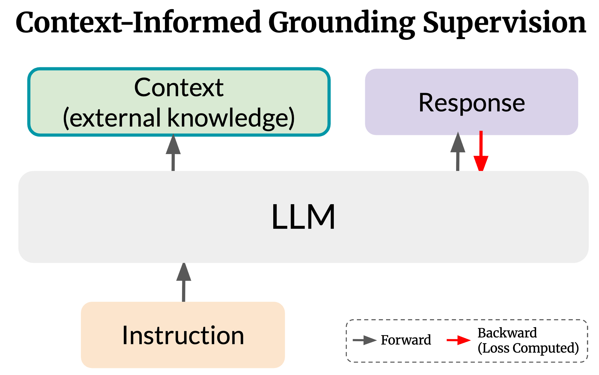
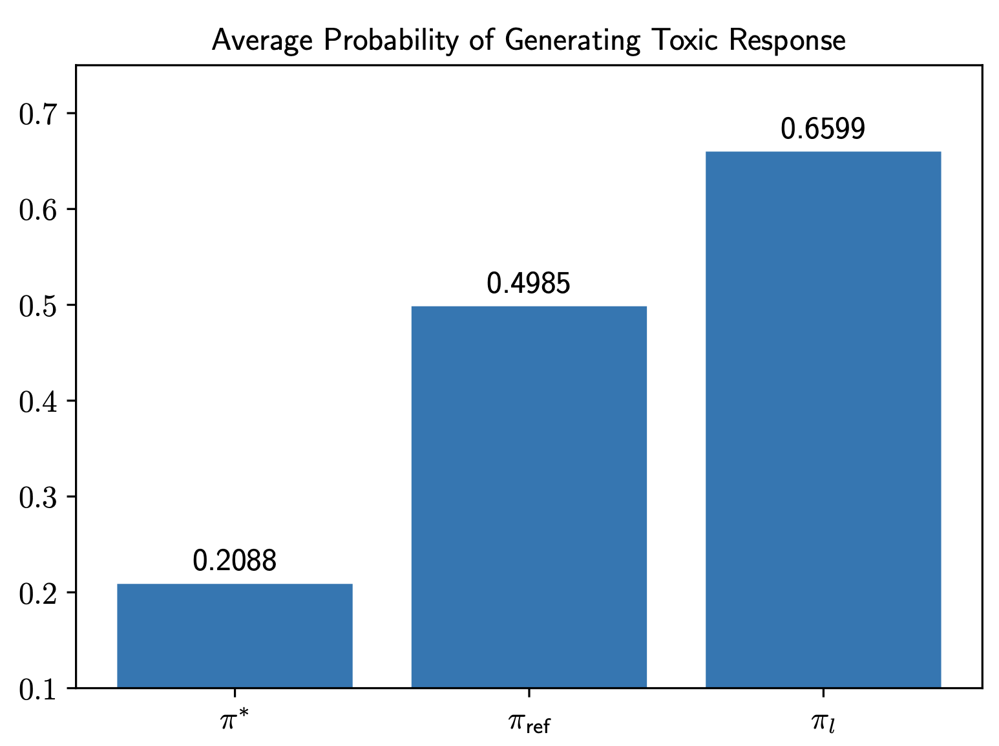
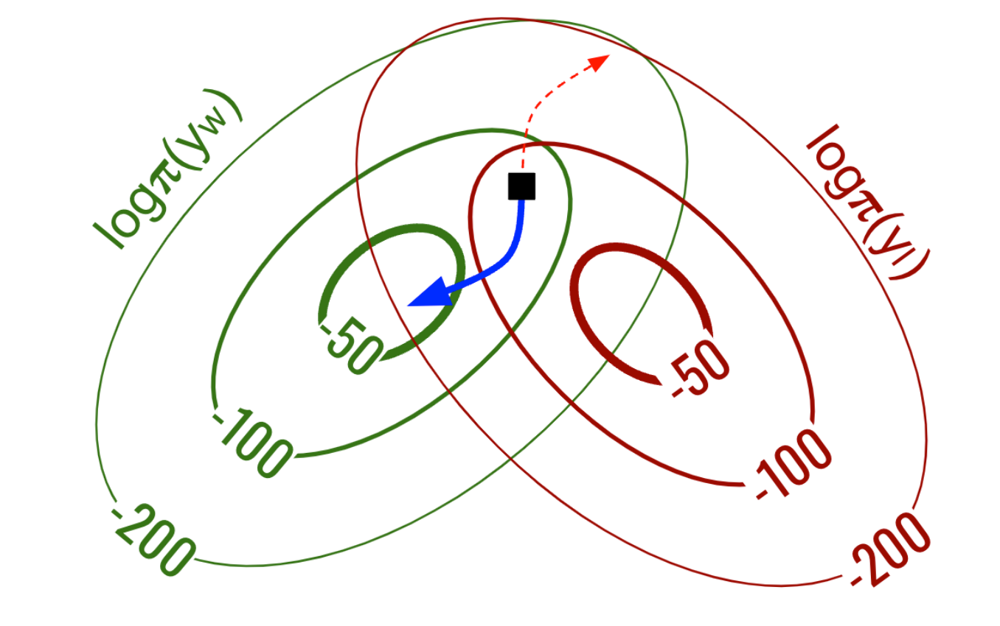
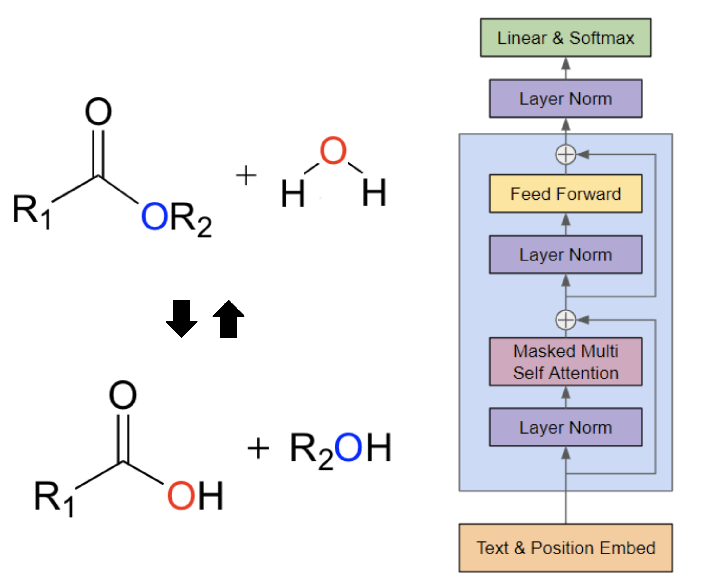
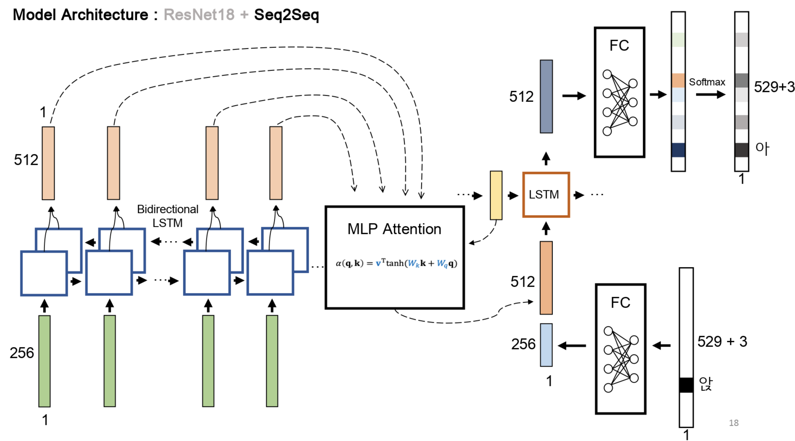

|
Yunjae Won I'm an integrated M.S.+Ph.D. student at KAIST AI, advised by Minjoon Seo. I received my B.S. in Electrical Engineering with a minor in Computer Science from KAIST in 2024. Previously, I interned at Naver Place, where I implemented a distributed hyperparameter optimization framework and developed a lightweight, high-accuracy visual quality assessment model. I also interned at the NCSoft Speech AI Lab, where I built a SOTA-level vocal-track extraction model for K-Pop music. |

|
ResearchI am primarily interested in preference optimization, continual learning, and large language models. My current research focuses on quantifying information gain to enhance continual learning and knowledge distillation. |
|

|
Context-Informed Grounding Supervision
Hyunji Lee, David Seunghyun Yoon, Yunjae Won, Hanseok Oh, Geewook Kim, Trung Bui, Franck Dernoncourt, Elias Stengel-Eskin , Mohit Bansal, Minjoon Seo Preprint. Under Review. arXiv We introduce Context-INformed Grounding Supervision (CINGS), a post-training supervision method where LLMs are trained to ground its responses on external context without overly relying on its own parametric knowledge. |

|
Differential Information: An Information-Theoretic Perspective on Preference Optimization
Yunjae Won, Hyunji Lee, Hyeonbin Hwang, Minjoon Seo Preprint. Under Review. arXiv By interpreting preference optimization as the process of learning differential information, we characterize the structure of preference data, justify DPO's log-ratio reward, and explain the resulting behaviors of trained policies. |
Projects |
|

|
A Closed-Form Expression for Unalignment: Generating Harmful Responses from Aligned Models
Yunjae Won, Jiyeon Kim Project for KAIST AI707 < Advanced Topics in Deep Reinforcement Learning >, Spring 2025 Report By deriving a closed-form expression for the ideal distribution of rejected responses under the DPO framework, we show that it is possible to generate harmful responses from aligned policies. |
|

|
Orthogonal Gradient Descent: Learning from Preferences with Minimal Forgetting
Yunjae Won, Doyoung Kim, Geewook Kim Project for KAIST AI611 < Deep Reinforcement Learning >, Fall 2024 Report Using projected gradient descent, we propose a method to learn from human preferences while minimizing forgetting of previous knowledge. |
|

|
Metabolic Reaction Prediction via Next Token Prediction
Yunjae Won, Jinho Park Project for KAIST AI607 < Graph Mining and Social Network Analysis >, Fall 2024 Report We formulate the metabolic reaction prediction task as a next token prediction problem, and propose using a transformer architecture that predicts the next reaction given the current reaction and its reactants. |
|

|
Korean Handwritten Text Recognition
Yunjae Won, Gungyu Lee, Hongju Jeong Kyowon Group AI Challenge, 2023 Developed a Korean text recognition model on a dataset of handwritings from Korean children. Ranked 1st place out of 1,158 participants using only limited Google Colaboratory resources, outperforming an OCR corporate team backed by state-of-the-art GPUs. |
|
This website's source code was borrowed from Jon Barron. |